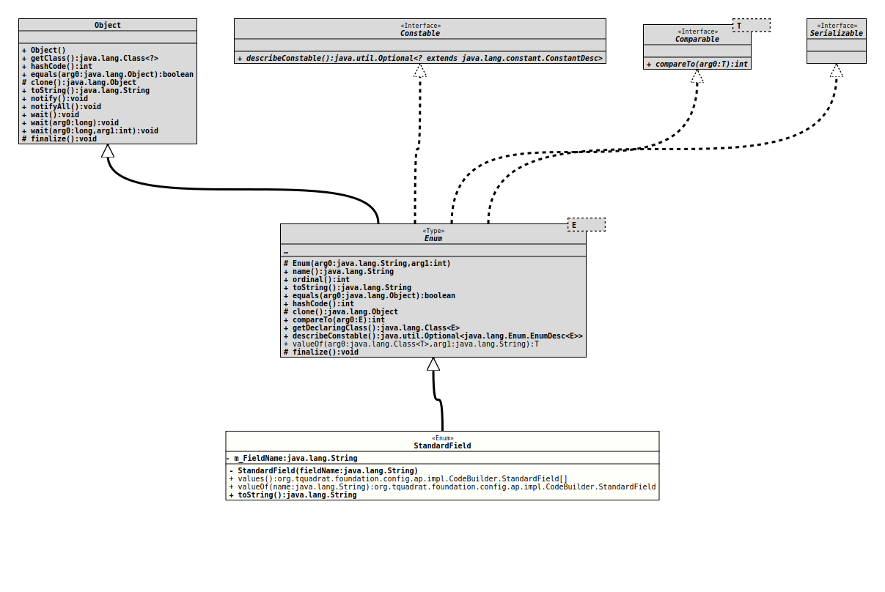

Enum Class CodeBuilder.StandardField
java.lang.Object
java.lang.Enum<CodeBuilder.StandardField>
org.tquadrat.foundation.config.ap.impl.CodeBuilder.StandardField
- All Implemented Interfaces:
Serializable,Comparable<CodeBuilder.StandardField>,Constable
- Enclosing interface:
- CodeBuilder
@ClassVersion(sourceVersion="$Id: CodeBuilder.java 946 2021-12-23 14:48:19Z tquadrat $")
@API(status=MAINTAINED,
since="0.2.0")
public static enum CodeBuilder.StandardField
extends Enum<CodeBuilder.StandardField>
The standard fields.
- Author:
- Thomas Thrien (thomas.thrien@tquadrat.org)
- Version:
- $Id: CodeBuilder.java 946 2021-12-23 14:48:19Z tquadrat $
- Since:
- 0.2.0
- UML Diagram
-

UML Diagram for "org.tquadrat.foundation.config.ap.impl.CodeBuilder.StandardField"
{kind=link}
-
Nested Class Summary
Nested classes/interfaces inherited from class java.lang.Enum
Enum.EnumDesc<E extends Enum<E>> -
Enum Constant Summary
Enum ConstantsEnum ConstantDescriptionThe registry for the preferences accessors.The CLI definitions.The CLI error.The INIFile instance.The file name for the INIFile.The listener support.The listener for preference changes.The preferences root.The read lock.The registry for the properties when the Map interface needs to be implemented.The currentResourceBundle.TheLocalefor the current resource bundle.Deprecated, for removal: This API element is subject to removal in a future version.Obsolete now.The user preferences.The "write" lock. -
Field Summary
Fields -
Constructor Summary
ConstructorsModifierConstructorDescriptionprivateStandardField(String fieldName) Creates a newStandardFieldinstance. -
Method Summary
Modifier and TypeMethodDescriptionfinal StringtoString()Returns the field name for this standard field, as it is used in the generated code.static CodeBuilder.StandardFieldReturns the enum constant of this class with the specified name.static CodeBuilder.StandardField[]values()Returns an array containing the constants of this enum class, in the order they are declared.
-
Enum Constant Details
-
STD_FIELD_Accessors
@API(status=MAINTAINED, since="0.0.1") public static final CodeBuilder.StandardField STD_FIELD_AccessorsThe registry for the preferences accessors. -
STD_FIELD_CLIDefinitions
@API(status=MAINTAINED, since="0.0.1") public static final CodeBuilder.StandardField STD_FIELD_CLIDefinitionsThe CLI definitions. -
STD_FIELD_CLIError
@API(status=MAINTAINED, since="0.0.1") public static final CodeBuilder.StandardField STD_FIELD_CLIErrorThe CLI error. -
STD_FIELD_INIFile
@API(status=MAINTAINED, since="0.1.0") public static final CodeBuilder.StandardField STD_FIELD_INIFileThe INIFile instance. -
STD_FIELD_INIFileName
@API(status=MAINTAINED, since="0.1.0") public static final CodeBuilder.StandardField STD_FIELD_INIFileNameThe file name for the INIFile. -
STD_FIELD_ListenerSupport
@API(status=MAINTAINED, since="0.0.1") public static final CodeBuilder.StandardField STD_FIELD_ListenerSupportThe listener support. -
STD_FIELD_PreferenceChangeListener
@API(status=MAINTAINED, since="0.1.0") public static final CodeBuilder.StandardField STD_FIELD_PreferenceChangeListenerThe listener for preference changes. -
STD_FIELD_PreferencesRoot
@API(status=MAINTAINED, since="0.0.1") public static final CodeBuilder.StandardField STD_FIELD_PreferencesRootThe preferences root. -
STD_FIELD_ReadLock
@API(status=MAINTAINED, since="0.0.1") public static final CodeBuilder.StandardField STD_FIELD_ReadLockThe read lock. -
STD_FIELD_Registry
@API(status=MAINTAINED, since="0.0.1") public static final CodeBuilder.StandardField STD_FIELD_RegistryThe registry for the properties when the Map interface needs to be implemented. -
STD_FIELD_ResourceLocale
@API(status=MAINTAINED, since="0.0.2") public static final CodeBuilder.StandardField STD_FIELD_ResourceLocaleTheLocalefor the current resource bundle. -
STD_FIELD_ResourceBundle
@API(status=MAINTAINED, since="0.0.2") public static final CodeBuilder.StandardField STD_FIELD_ResourceBundleThe currentResourceBundle. -
STD_FIELD_SystemPreferences
@Deprecated(since="0.1.0", forRemoval=true) @API(status=MAINTAINED, since="0.0.1") public static final CodeBuilder.StandardField STD_FIELD_SystemPreferencesDeprecated, for removal: This API element is subject to removal in a future version.Obsolete now.The system preferences. -
STD_FIELD_UserPreferences
@API(status=MAINTAINED, since="0.0.1") public static final CodeBuilder.StandardField STD_FIELD_UserPreferencesThe user preferences. -
STD_FIELD_WriteLock
@API(status=MAINTAINED, since="0.0.1") public static final CodeBuilder.StandardField STD_FIELD_WriteLockThe "write" lock.
-
-
Field Details
-
m_FieldName
The field name.
-
-
Constructor Details
-
StandardField
Creates a newStandardFieldinstance.- Parameters:
fieldName- The field name.
-
-
Method Details
-
values
Returns an array containing the constants of this enum class, in the order they are declared.- Returns:
- an array containing the constants of this enum class, in the order they are declared
-
valueOf
Returns the enum constant of this class with the specified name. The string must match exactly an identifier used to declare an enum constant in this class. (Extraneous whitespace characters are not permitted.)- Parameters:
name- the name of the enum constant to be returned.- Returns:
- the enum constant with the specified name
- Throws:
IllegalArgumentException- if this enum class has no constant with the specified nameNullPointerException- if the argument is null
-
toString
Returns the field name for this standard field, as it is used in the generated code.- Overrides:
toStringin classEnum<CodeBuilder.StandardField>- Returns:
- The field name.
-